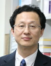

Dr. Young-Joon Surh is a Professor of Biochemistry at the College of Pharmacy, Seoul National University, South Korea. He currently serves as Director of Tumor Microenvironment Global Core Research Center Research Center (GCRC), which is supported by the National Research Foundation of Republic of Korea. Prof. Surh graduated from Seoul National University with BS (Pharmacy) and MS (Biochemistry) and earned his PhD degree at the McArdle Laboratory for Cancer Research, University of Wisconsin-Madison, USA. He had postdoctoral training at the Massachusetts Institute of Technology (MIT). In 1992, he was appointed as a tenure-track Assistant Professor at Yale University School of Medicine. Since relocating to Seoul National University in 1996, Prof. Surh has been investigating the molecular mechanisms of cancer prevention with natural products, with special focus on redox modulation of antioxidant and anti-inflammatory signaling molecules as prime targets. He has served as a member of the editorial board member of more than 30 international journals, including Carcinogenesis, International Journal of Cancer, Molecular Carcinogenesis, Cancer Letters, Cancer Prevention Research, Mutation Research, Life Sciences, Molecular and Cellular Biochemistry, Free Radical Research, Food and Chemical Toxicology, Biofactors, Genes and Nutrition, Molecular Nutrition and Food Research, etc. He is also editor of the following books: Oxidative Stress, Inflammation and Health (CRC Press), Molecular Targets
and Therapeutic Use of Curcumin (Springer-Veralg), and Dietary Modulation of Cell Signaling Pathways (CRC Press). Prof. Surh has published more than 250 papers in peer-reviewed international journals and more than 70 invited editorials, reviews and book chapters. The total number of citations of his publications is more than 10,000 (excluding self-citations). He received numerous awards including Elizabeth C. Miller and James
A. Miller Distinguished Scholar Award from Rutgers University (2011), McCormic
Science Institute Award from American Society for Nutrition (2009), the
Merit Award from the International Society of Nutraceuticals and Functional
Foods (2010). He published a seminal review article, titled cancer chemoprevention
with dietary phytochemicals, in Nature Reviews Cancer which has been highly cited (more than 1,000 times).